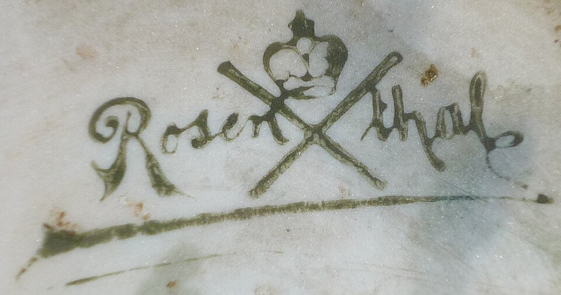
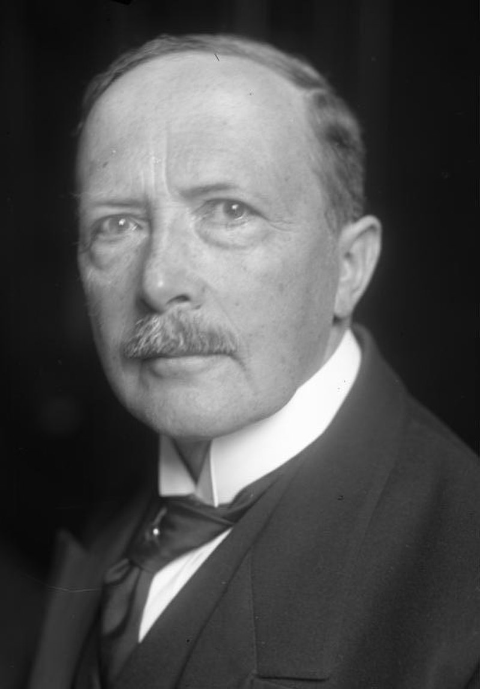
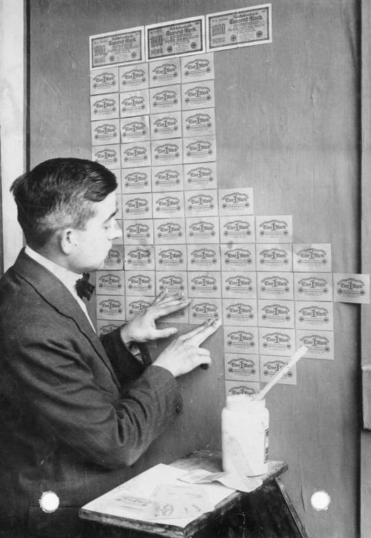

Geschichte im Spiegel der zeitgenössischen Berichterstattung — Täglich neu erzählt
Die historische Presseschau
Montag, 30. August 1926
7 Artikel aus 13 Originalquellen · 4 Länder · 3 Sprachen
Ehemalige Fürsten und Heerführer nehmen Parade ab — Zehntausende im Stechschritt — Sozialdemokratische Presse spricht von einem Fehlschlag

Deutlicher Rückgang der Ausstellerzahlen — Vorsichtige Dispositionen im Kleinhandel — Auslandsinteresse am ersten Tag

Entschließung des Fortsetzungsausschusses in Bern — Erzwungene Bekenntnisse als moralisch wertlos bezeichnet — Ansprache von Reichsgerichtspräsident Simons
Millionenmetropole steht still — Dramatische Szenen am Sarg des Filmstars — Faschistenstreit überschattet Trauerfeierlichkeiten

Schwere Vorwürfe gegen Agitatoren der Aufwertungsbewegung — Stürmische Szenen im Gerichtsgebäude — Hjalmar Schacht als Nebenkläger
Warschau fordert multilaterales Abkommen — Zaleski lehnt bilateralen Neutralitätsvertrag ab
England sichert sich den Gesamtsieg — Weltrekord der englischen Staffel — Glänzende Leistungen der Japanerin Hitomi